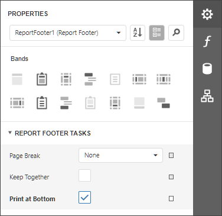
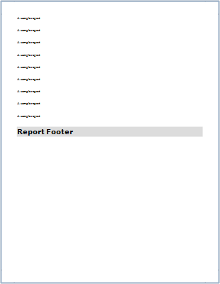
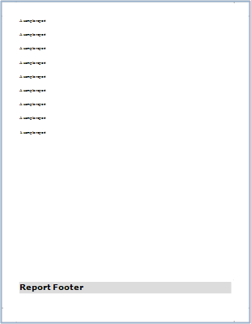
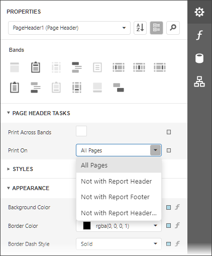
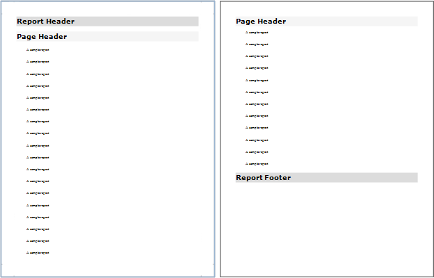
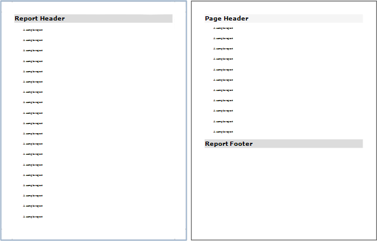
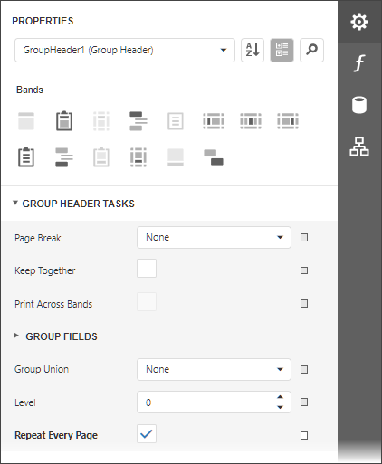
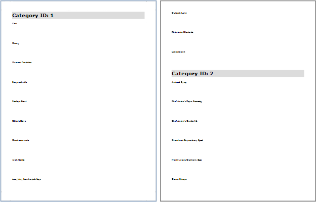
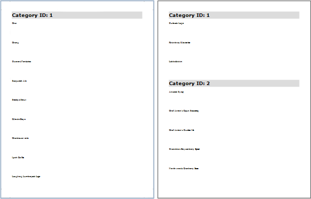

Maintain the Band Location on a Page
Use the Group and Report Footer's Print at Bottom property to choose whether these bands should appear at the bottom of a page or immediately after the previous band.

| Print at Bottom = No | Print at Bottom = Yes |
|---|---|
|  |  |
Use the Page Header and Footer's Print On property to avoid printing these bands on the same page with a Report Header and/or Footer.

Print On = All Pages

Print On = Not With Report Header

Use the Group Header and Footer's Repeat Every Page property to repeat these bands on every page.

Repeat Every Page = No

Repeat Every Page = Yes
